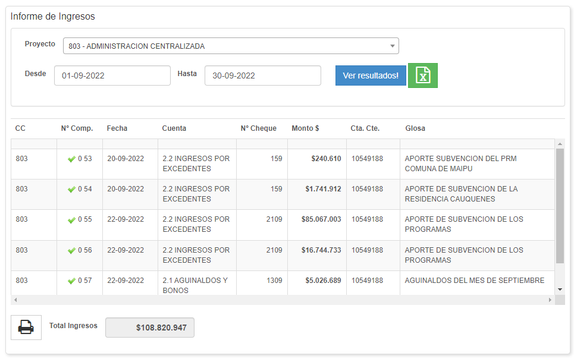

8.1 Rendición de Cuentas
Al presionar en el Menú Software SAG, Informes – Rendición de Cuentas, se despliega una lista con las siguientes funciones:
Ingresos :Al presionar permite visualizar y exportar a Excel los Informes de Ingresos al cual solo debe seleccionar el rango de fechas a buscar, el programa al cual se tiene acceso y presionar Ver Resultados, según el siguiente Ej.:

Egresos :Al presionar permite visualizar y exportar a Excel los Informes de Egresos al cual solo debe seleccionar el rango de fechas a buscar, el programa al cual se tiene acceso y presionar Ver Resultados, según el siguiente Ej.:
Reintegros :Al presionar permite visualizar y exportar a Excel los Informes de Reintegros al cual solo debe seleccionar el rango de fechas a buscar, el programa al cual se tiene acceso y presionar Ver Resultados, según el siguiente Ej.:
Cuentas :Al presionar permite visualizar y exportar a Excel el Informes de Cuentas al cual solo debe seleccionar el rango de fechas, el programa al cual se tiene acceso, la cuenta contable y presionar Ver Resultados, según el siguiente Ej.:
Fondos a Rendir :Al presionar permite visualizar y exportar a Excel el Informe de Fondos a Rendir, para obtener solo debe seleccionar el rango de fechas, el programa al cual se tiene acceso y presionar Ver Resultados, según el siguiente Ej.:
Cajas Chica :Al presionar permite visualizar y exportar a Excel el Informe de los gastos utilizados por Caja Chica, para obtener solo debe seleccionar el Mes, el programa al cual se tiene acceso y presionar Ver Resultados, según el siguiente Ej.:
HonorariosAl presionar permite visualizar y exportar a Excel el Informe de Honorarios, para obtener solo debe seleccionar el Mes, el programa al cual se tiene acceso y presionar Ver Resultados, según el siguiente Ej.: